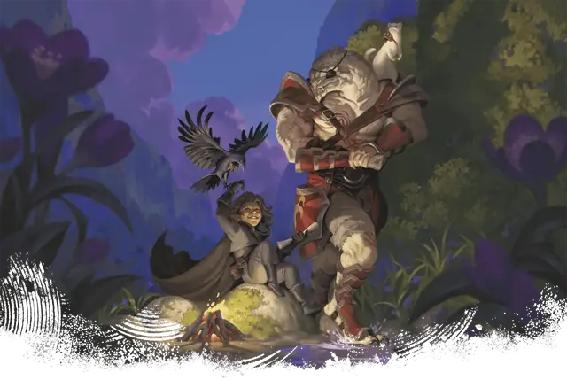

Сопротивление заклинаниям
Spell Resistant
Универсальная черта (Требования: 4 уровень)

Вы получаете следующие преимущества:
Повышение характеристики. Увеличьте значение вашей Ловкости или Телосложения на 1, но не выше 20.
Стойкость магии. Вы получаете Сопротивление одному из следующих типов урона (выберите при взятии черты): Некротический, Психический, Звук или Излучение.
Сопротивление магии. Когда вы проваливаете спасбросок против заклинания или магического эффекта, можете бросить 1к6 и добавить выпавшее число к результату спасброска, что может превратить провал в успех. Вы можете использовать это преимущество количество раз, равное вашему Бонусу владения, и вы восстанавливаете все потраченные использования по завершении Долгого отдыха.